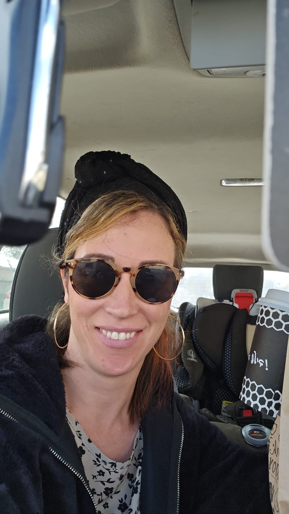

מהניצוץ ועד הממלכה

40 עקרונות מחקריים לזוגיות טובה — מבוססים על מחקרי גוטמן, תורת ההיקשרות ופסיכולוגיה של זוגיות. כי גם אהבה גדולה צריכה טיפוח יומיומי 💗
לחצו על כל לב כדי לפתוח את העצה ✦ · מבוסס מחקר: ג׳ון וג׳ולי גוטמן, סו ג׳ונסון (EFT), תורת ההיקשרות
הזוגיות שלכם היא הבית שממנו צמחה הממלכה. שתמשיכו לבחור זה בזה, כל יום מחדש 💍
💌 לחזרה להזמנה